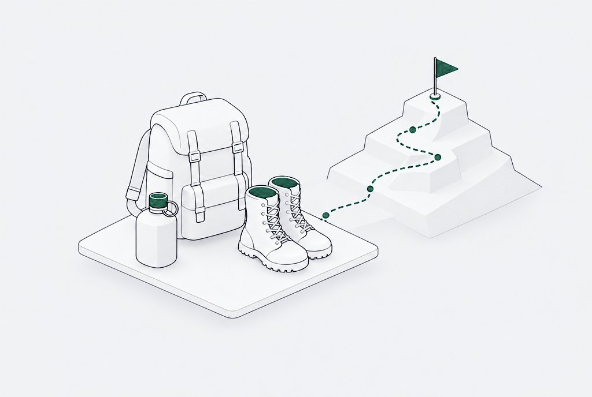
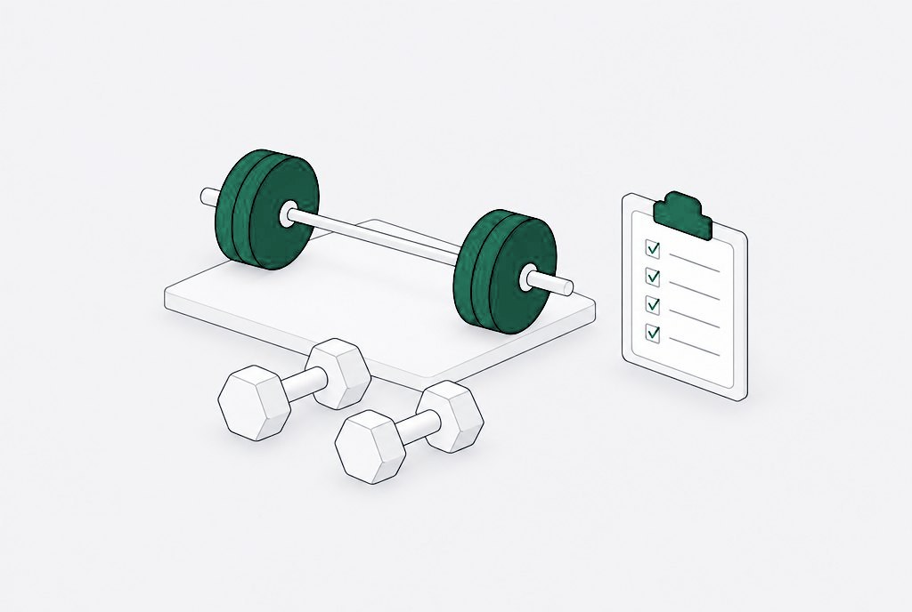

Who I am.
Why I work the way I do.
Marine, then engineer, and still a student of this domain.
U.S. Marine Corps veteran (2/5 Marines, Camp Pendleton). In my final two years of service, I developed a passion for computer networking, security, and systems hacking. Starting with Cisco Packet Tracer, building my own labs, learning to code, and solving real operational problems. I assisted my unit with process and SOP reform and worked directly with our career planner to streamline his scheduling workflow using Calendly, one of the most innovative scheduling tools of that era. That was the spark. After five years of active duty as a Rifleman and Security Force Guard, I transitioned to IT in 2020 and haven’t looked back. Pursuing my B.S. in Cyber Security at UMGC, with the CCIE in my sights.

I’ve been obsessed with growth since I was 14. Self-help books, systems thinking, finding ways to optimize. It’s just how I’m wired. I have a systematic way of approaching problems, and I’m always looking for ways to add more to my plate by making what’s already there run leaner. That drive is what led me to join arguably the hardest branch of the military. My recruiter told me I had the IQ for Intel or Communications. I chose the infantry anyway, because I wanted the challenge. I wanted to test my grit, build my resilience, and prove something to myself. Looking back, that decision shaped everything that came after it.

During my time in the Corps, I competed as a men’s physique bodybuilder. The sport wasn’t just about aesthetics. It was about discipline, structure, and competing with yourself every single day. It was a natural extension of everything I was already doing: showing up, pushing past what I thought I was capable of, and never settling for average.
Toward the end of my service, I picked up Mindset: The New Psychology of Success by Carol Dweck. One idea landed hard: we are only as capable as the time and effort we’ve invested in a given domain. That realization sent me toward something I knew nothing about, coding and computer systems. No background, no roadmap. Just a decision to keep hammering. I built labs, followed YouTube tutorials, pieced together concepts, and fell in love with networking and systems architecture. By the time I separated from the Marine Corps, I had already laid the foundation for the career I was about to build.
The military gave me discipline. My competitive fitness career gave me structure. The growth mindset gave me permission to be a beginner at something hard and stay in it anyway. That combination is what I bring to every project, every ticket, and every new technology I encounter. I’m not just chasing titles or certifications. I’m a student of this domain, and I plan to stay one. The deeper I go, the more there is to learn, and that’s exactly what keeps me excited for whatever comes next.
Let’s talk.
Hiring, or need a project closed out? Start here.